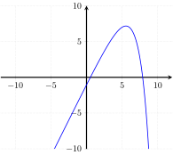

Monotonicity (Solutions)
For each one of the following functions, say whether it is monotonic.
- \(i(x) = x^3 + 3x^2\)

- \(j(x) = 5 \sqrt{|x+2|} - \frac{5|x|}{3}\)

- \(k(x) = 2\)

- \(l(x) = 2x - 2^{x-4} + 3\)

- Not monotonic
- Not monotonic
- Monotonic
- Not monotonic
The functions \(i\), \(j\), and \(l\) all change direction at some point. The function \(k\) is a constant function, it neither goes up nor down. Since that entails never changing direction, it is monotonic.
Give another example of a function that is not monotonic.
The function \(f\) that maps even numbers to \(0\) and odd numbers to \(1\).
The sky is the limit here, there is no shortage of functions that are not monotonic. For example, take a function from natural numbers to natural numbers that maps \(100\) to \(0\) and every other number to \(1\). This function is not monotonic. But instead of \(100\), we could have picked \(1\), or \(3\), or \(17\), or some other natural number that is not \(0\), and the result would have been a non-monotonic function. This already shows us that there are infinitely many functions that are not monotonic.
For each one of the following functions say whether it is monotonic increasing, monotonic decreasing, or neither.
- \(f: \mathbb{N} \rightarrow \mathbb{R}\), \(x \mapsto -x\)
- \(f: \mathbb{R} \rightarrow \mathbb{R}\), \(x \mapsto x - 10\)
- \(f: \mathbb{R} \rightarrow \mathbb{R}\), \(x \mapsto x^2\)
- \(f: \mathbb{R} \rightarrow \mathbb{R}\), \(x \mapsto \frac{x}{2}\)
- \(f: \mathbb{N} \rightarrow \mathbb{N}\), \(f(n)\) is \(1\) if \(n = 0\) and \(n \times f(n-1)\) otherwise
- \(f: \mathbb{N} \rightarrow \mathbb{R}\), \(x \mapsto -x\) is monotonic decreasing
- \(f: \mathbb{R} \rightarrow \mathbb{R}\), \(x \mapsto x - 10\) is monotonic increasing
- \(f: \mathbb{R} \rightarrow \mathbb{R}\), \(x \mapsto x^2\) is neither
- \(f: \mathbb{R} \rightarrow \mathbb{R}\), \(x \mapsto \frac{x}{2}\) is monotonic increasing
- \(f: \mathbb{N} \rightarrow \mathbb{N}\), \(f(n)\) is \(1\) if \(n = 0\) and \(n \times f(n-1)\) otherwise is monotonic increasing
- If \(x\) and \(y\) are natural numbers such that \(x \leq y\), then it must be the case that \(-x \geq -y\). For example, \(1 \leq 5\), and \(-1 \geq -5\).
- If \(x\) and \(y\) are reals such that \(x \leq y\), then \(x - 10 \leq y - 10\). For example, \(-1 \leq 1\) and \(-11 \leq -9\).
- It suffices to consider two concrete cases here. Suppose \(x = -5\) and \(y = 1\). Then \(x \leq y\), but \(x^2 = 25 \geq 1 = y^2\). On the other hand, if \(x = 5\) and \(y = 10\), then \(x^2 = 25 \leq 100 = y^2\). Hence we sometimes have \(f(x) \leq f(y)\) and sometimes \(f(x) \geq f(y)\), which means that \(f\) is neither monotonic increasing nor monotonic decreasing.
- This might be easiest to understand by drawing a diagram, but we can also consider some representative values: \(f(-10) = -5\), \(f(-6) = -3\), \(f(-1) = -0.5\), \(f(0) = 0\), \(f(1) = 0.5\), \(f(6) = 3\), and \(f(10) = 5\). As you can see, whenever \(x \leq y\), it holds that \(f(x) \leq f(y)\).
- The hardest part here is to understand the definition of \(f\). We start out with \(f(0) = 1\). We then have \(f(1) = 1 \times f(0) = 1 \times 1 = 1\). After that, \(f(2) = 2 \times f(1) = 2 \times 1 = 2\), and \(f(3) = 3 \times f(2) = 3 \times 2 = 6\). Then \(f(4) = 4 \times f(3) = 4 \times 6 = 24\), and so on. As you might have noticed, \(f\) is just the factorial, that is to say \(f(n) = n!\). And if \(x \leq y\), then it always holds that \(x! \leq y!\) because \(y!\) is the result of taking \(x!\) and multiplying if with the numbers between \(x\) and \(y\) (including \(y\) itself). For example, \(2 \leq 4\), and \(4! = 4 \times 3 \times 2! = 24\), which is necessarily greater than \(2! = 2\).
Given an example of a function that is both monotonic increasing and monotonic decreasing.
The constant function \(k(x) = 2\) from earlier on.
There are several cases where a function is both monotonic increasing and monotonic decreasing.
The more intuitive case arises with constant functions, where all inputs are mapped to the same fixed output: since we have \(f(x) = f(y)\) for all \(x\) and \(y\), it holds that \(f(x) \leq_B f(y)\) and \(f(y) \leq_B f(x)\) irrespective of whether we have \(x \leq_A y\) or \(y \leq_A x\).
Another case arises if \(A\) has only one member \(x\). In this case, we only have \(x \leq_A x\), and obviously both \(f(x) \leq_B f(x)\) and \(f(x) \geq_B f(x)\) always hold.
Finally, we could also be dealing with the degenerate scenario where \(\leq_A\) does not order any elements of \(A\). Perhaps \(A\) is the empty set, or perhaps it is a non-empty set but \(\leq_A\) is the empty order relation that does not actually order any elements. In this case, both monotonicity properties are trivially true for every function \(f\) with domain \(A\). The reasoning is as follows: in order to show that \(f\) is not monotonic increasing, we would need two \(x\) and \(y\) such that \(x \leq_A y\) but \(f(x) \not\leq_A f(y)\). But we already know that there are no \(x\) and \(y\) such that \(x \leq_A y\), hence there are no counterexamples to \(f\) being monotonic increasing, which means that it is monotonic increasing. The same reasoning also establishes that \(f\) is monotonic decreasing.